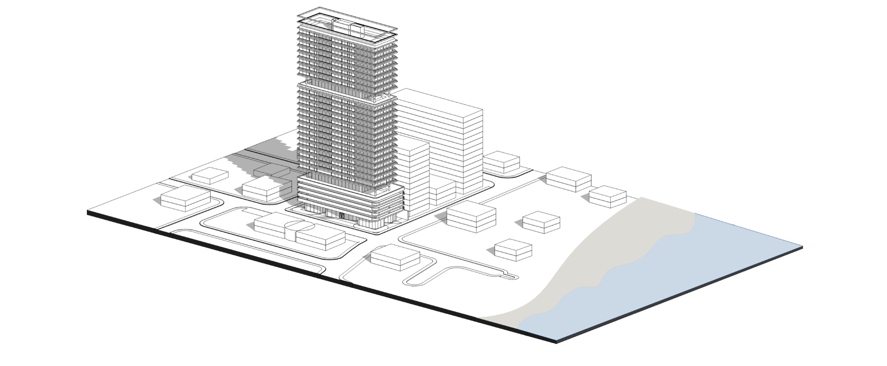
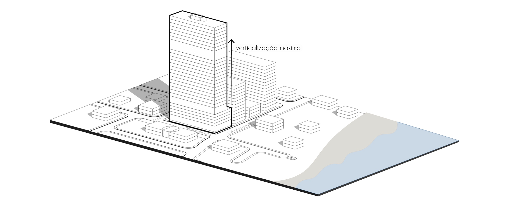
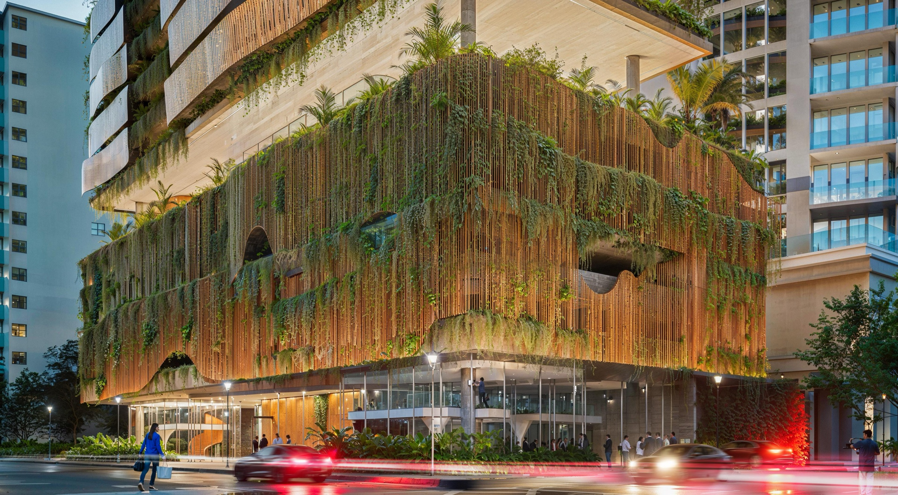
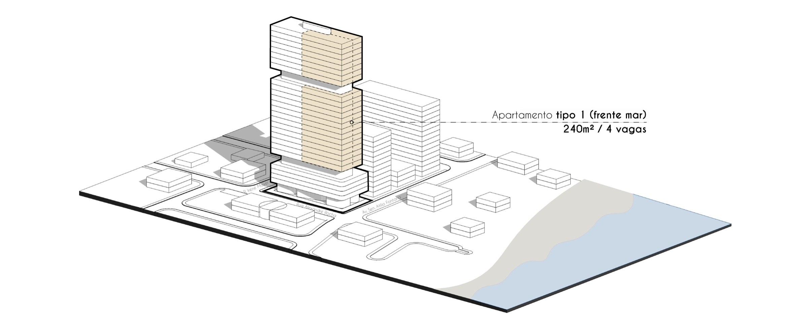
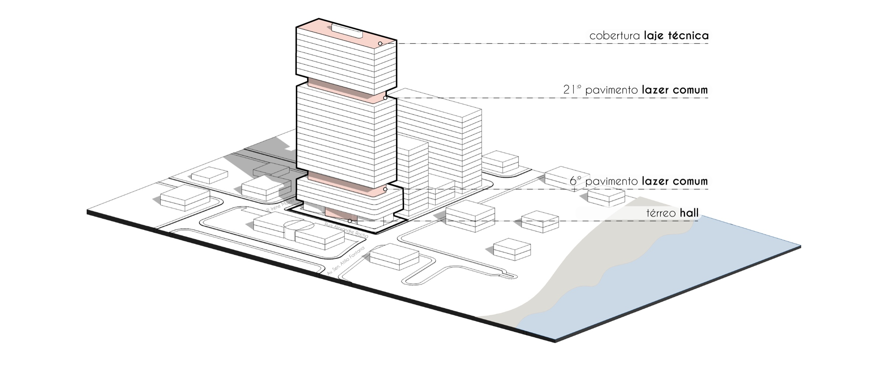
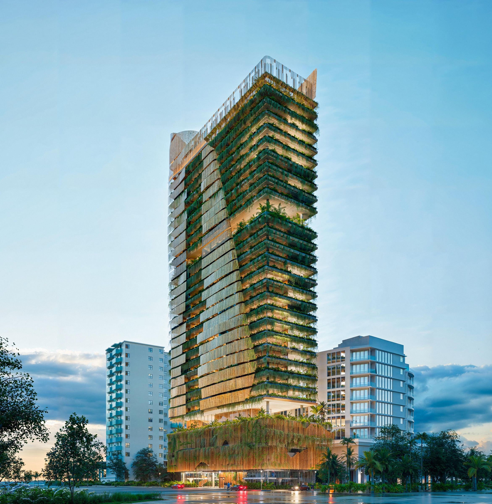

220m² privativos entre o 8° e o 10° andar. Empreendimento assinado por Jayme Bernardo Arquitetos em Perequê — Porto Belo, SC. Projeção de 2,0× no lançamento.



perspectiva embasamento · imagens representativasConcebido por Jayme Bernardo Arquitetos e desenvolvido pela ZAH Empreendimentos, o empreendimento une design biofílico assinado — brises móveis de madeira, jardins verticais — a uma localização direta frente ao mar no Perequê, Porto Belo, SC.


Entre o 8° e o 10° andar, frente totalmente voltada para o mar. Apartamento tipo 1 — a unidade mais premium do projeto, com 220m² privativos e 4 vagas exclusivas.

perspectiva externa · imagens representativas
Fundado em 1983 em Curitiba, o escritório tem mais de 40 anos de trajetória
e unidades em São Paulo e Balneário Camboriú. Projetos internacionais em
Estados Unidos, França e Emirados Árabes.
"Arquitetura é arte que transforma espaços em experiências."
— Jayme Bernardo, Fundador e CEO
Incorporadora com visão diferenciada do mercado imobiliário, selecionando
parceiros que compartilham o compromisso com excelência construtiva e design
de alto padrão.
No projeto de Porto Belo, ZAH e JB Arquitetos desenvolvem juntas o
empreendimento residencial de maior impacto da Costa Esmeralda.
Material restrito a investidores qualificados. Entre em contato com o Corazza Investimentos pelo WhatsApp para receber a apresentação completa.
Falar no WhatsAppMaterial preliminar de uso restrito. As projeções financeiras são estimativas baseadas em histórico de produtos imobiliários equivalentes e na dinâmica atual do mercado, sem caráter de oferta pública ou garantia de retorno. As perspectivas arquitetônicas são imagens representativas e podem sofrer alterações. Destinado exclusivamente a investidores qualificados — não divulgue sem autorização. ZAH Empreendimentos · Jayme Bernardo Arquitetos · Porto Belo, SC · 2025.